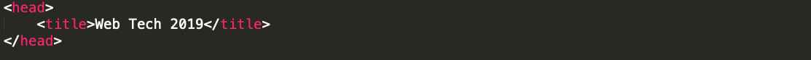
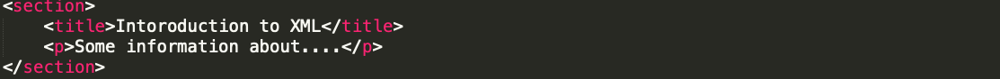
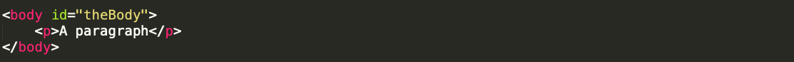

About XHTML
○ XHTML stands for EXtensible HyperText Markup Language. It is the next step in the evolution of the internet. The XHTML 1.0 is the first document type in the XHTML family.
○ XHTML is almost identical to HTML 4.01 with only few differences. This is a cleaner and stricter version of HTML 4.01. If you already know HTML, then you need to give little attention to learn this latest version of HTML.
○ XHTML was developed by World Wide Web Consortium (W3C) to help web developers make the transition from HTML to XML. By migrating to XHTML today, web developers can enter the XML world with all of its benefits, while still remaining confident in the backward and future compatibility of the content.
Developers who migrate their content to XHTML 1.0 get the following benefits:
○ XHTML documents are XML conforming as they are readily viewed, edited, and validated with standard XML tools.
○ XHTML documents can be written to operate better than they did before in existing browsers as well as in new browsers.
○ XHTML documents can utilize applications such as scripts and applets that rely upon either the HTML the XML Document Object Model.
◾ Block-level and inline (aka text-level) elements
○ Block-level elements represent “larger” document structures and may contain inline & other block level elements
○ Inline elements contain only data and other inline elements
List of Elements
1. The html element
▶ The html element is the root element for all XHTML Family Document Types. The @xml:lang attribute is required on this element.
2. The head element
▶ The head element contains information about the current document, such as its title, that is not considered document content. The default presentation of the head is not to display it; however that can be overridden with a style sheet for special purpose use. User agents may however make information in the head available to users through other mechanisms.
◾ Example
3. The Title element
▶ Every XHTML document must have a title element in the head section.

◾ Example
4. The body element
▶ The body of a document contains the document's content. The content may be processed by a user agent in a variety of ways. For example by visual browsers it can be presented as text, images, colors, graphics, etc., an audio user agent may speak the same content, and a search engine may create an index prioritized according to properties of the text.
p>
◾ Example

○ External style sheets (recommended)
○ Embedded styles
○ Inline styles
1. The style element ▶ The style element allows an author to put style sheet rules in the head of the document. XHTML permits any number of style elements in the head section of a document.
▶ The syntax of style data depends on the style sheet language.
▶ Rules for style rule precedences and inheritance depend on the style sheet language. 2. External style sheets Authors may separate style sheets from XHTML documents. This offers several benefits: ▶ Authors and web site managers may share style sheets across a number of documents (and sites). ▶ Authors may change the style sheet without requiring modifications to the document. ▶ User agents may load style sheets selectively (based on media descriptors). 3. Preferred and alternate style sheets ▶ XHTML allows authors to associate any number of external style sheets with a document. The style sheet language defines how multiple external style sheets interact (for example, the CSS "cascade" rules). ▶ Authors may specify a number of mutually exclusive style sheets called alternate style sheets. Users may select their favorite among these depending on their preferences. For instance, an author may specify one style sheet designed for small screens and another for users with weak vision (e.g., large fonts). User agents should allow users to select from alternate style sheets. ▶ The author may specify that one of the alternates is a preferred style sheet. User agents should apply the author's preferred style sheet unless the user has selected a different alternate. ▶ Authors may group several alternate style sheets (including the author's preferred style sheets) under a single style name. When a user selects a named style, the user agent must apply all style sheets with that name. User agents must not apply alternate style sheets with a different style name. The section on specifying external style sheets explains how to name a group of style sheets. ▶ Authors may also specify persistent style sheets that user agents must apply in addition to any alternate style sheet. ▶ User agents must respect media descriptors when applying any style sheet. ▶ User agents should also allow users to disable the author's style sheets entirely, in which case the user agent must not apply any persistent or alternate style sheets. 4.Specifying external style sheets ▶ TAuthors specify external style sheets using the xml-stylesheet processing instruction [XMLSTYLE], or, for CSS, by using the @import facility within a style element ▶User agents should provide a means for users to view and pick from the list of alternate styles, if specified.
1. The style element ▶ The style element allows an author to put style sheet rules in the head of the document. XHTML permits any number of style elements in the head section of a document.
▶ The syntax of style data depends on the style sheet language.
▶ Rules for style rule precedences and inheritance depend on the style sheet language. 2. External style sheets Authors may separate style sheets from XHTML documents. This offers several benefits: ▶ Authors and web site managers may share style sheets across a number of documents (and sites). ▶ Authors may change the style sheet without requiring modifications to the document. ▶ User agents may load style sheets selectively (based on media descriptors). 3. Preferred and alternate style sheets ▶ XHTML allows authors to associate any number of external style sheets with a document. The style sheet language defines how multiple external style sheets interact (for example, the CSS "cascade" rules). ▶ Authors may specify a number of mutually exclusive style sheets called alternate style sheets. Users may select their favorite among these depending on their preferences. For instance, an author may specify one style sheet designed for small screens and another for users with weak vision (e.g., large fonts). User agents should allow users to select from alternate style sheets. ▶ The author may specify that one of the alternates is a preferred style sheet. User agents should apply the author's preferred style sheet unless the user has selected a different alternate. ▶ Authors may group several alternate style sheets (including the author's preferred style sheets) under a single style name. When a user selects a named style, the user agent must apply all style sheets with that name. User agents must not apply alternate style sheets with a different style name. The section on specifying external style sheets explains how to name a group of style sheets. ▶ Authors may also specify persistent style sheets that user agents must apply in addition to any alternate style sheet. ▶ User agents must respect media descriptors when applying any style sheet. ▶ User agents should also allow users to disable the author's style sheets entirely, in which case the user agent must not apply any persistent or alternate style sheets. 4.Specifying external style sheets ▶ TAuthors specify external style sheets using the xml-stylesheet processing instruction [XMLSTYLE], or, for CSS, by using the @import facility within a style element ▶User agents should provide a means for users to view and pick from the list of alternate styles, if specified.